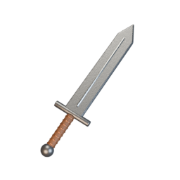
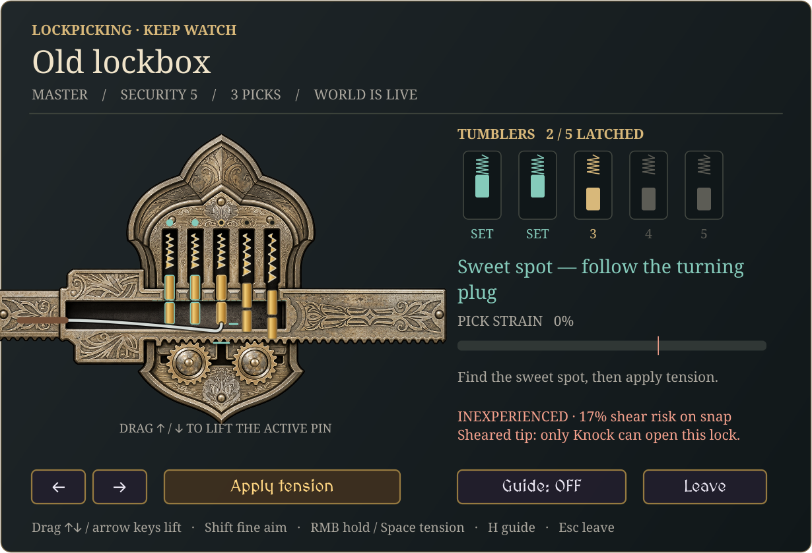
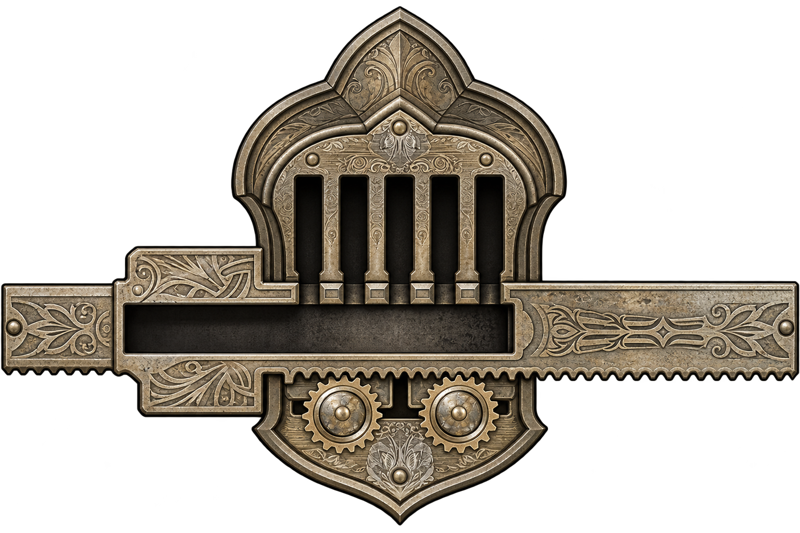

FROM THE VALE
A closer look
at what you carry.
Forged iron. Worn leather. A little magic.
Explore the new inventory artwork, one object at a time.

IRON LONGSWORD 001 / 103Nothing in this pocket.
Try another name or category.
THE LOCKSMITH’S TABLE
Every pin tells a story.
Engraved metalwork, exposed tumblers, and the spell that frees a sheared lock.

